On this page
Customer Experience has a folder of reviews in five languages, a stack of service tickets full of personal data, and a press release nobody has time to read. Engineering wants the in-car assistant to talk. Every one of these is a Foundry Tool call away, and all of them are already in your resource from Lap 0.
Part 0 · The idea in five minutes
gpt-audio-mini that takes audio in and returns audio and text in one call. No separate recognition or synthesis step; less control over the voice, more natural turn-taking.Match the technique to the output: key phrases → a list of topics; entities → typed things (person, date, product, PII); sentiment → positive/negative/neutral/mixed with scores; summarization → extractive (sentences copied) or abstractive (new text). Speech: recognition is audio→text, synthesis is text→audio, SSML tunes synthesis. Two ways to answer a spoken question: the Speech pipeline (STT → model → TTS) or one multimodal audio model. Know the trade-off: pipeline = control and cheaper models; multimodal = simpler and more natural.
Part 1 · Reload your pit board
export STUDENT=s07; export RG=rg-ai901-$STUDENT; export NAME=ai901-$STUDENT-pitcrew; export LOC=eastus2; export PROJECT=proj-ai901-$STUDENT
export KEY=$(az cognitiveservices account keys list -n $NAME -g $RG --query key1 -o tsv)
export ENDPOINT=https://$NAME.cognitiveservices.azure.com; export AI_ENDPOINT=https://$NAME.services.ai.azure.com; export AOAI_ENDPOINT=https://$NAME.openai.azure.com
export PROJECT_ENDPOINT=$AI_ENDPOINT/api/projects/$PROJECT
export FOUNDRY_ENDPOINT=$ENDPOINT AI_KEY=$KEY SPEECH_REGION=$LOC CHAT_MODEL=gpt-4-1-mini AUDIO_MODEL=gpt-audio-miniPart 2 · Text analysis on customer reviews
Azure AI Language has one synchronous endpoint; you change the kind. Start with sentiment on a grumpy review, then look at the full set of six reviews we analysed.
Sentiment with opinion mining. The document score says "negative"; opinion mining says what was negative (the cupholders).
curl -s -X POST "$ENDPOINT/language/:analyze-text?api-version=2024-11-01" -H "Ocp-Apim-Subscription-Key: $KEY" -H "Content-Type: application/json" -d '{ "kind": "SentimentAnalysis", "parameters": {"opinionMining": true}, "analysisInput": {"documents": [{"id": "1", "language": "en", "text": "Meh. It is a car. It goes. The cupholders are too small for my travel mug."}]} }' | jq '.results.documents[0] | {sentiment, confidenceScores}'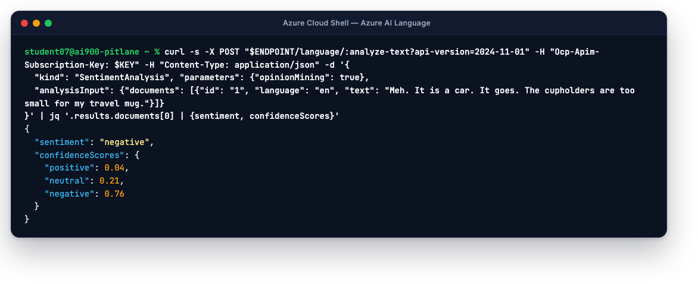
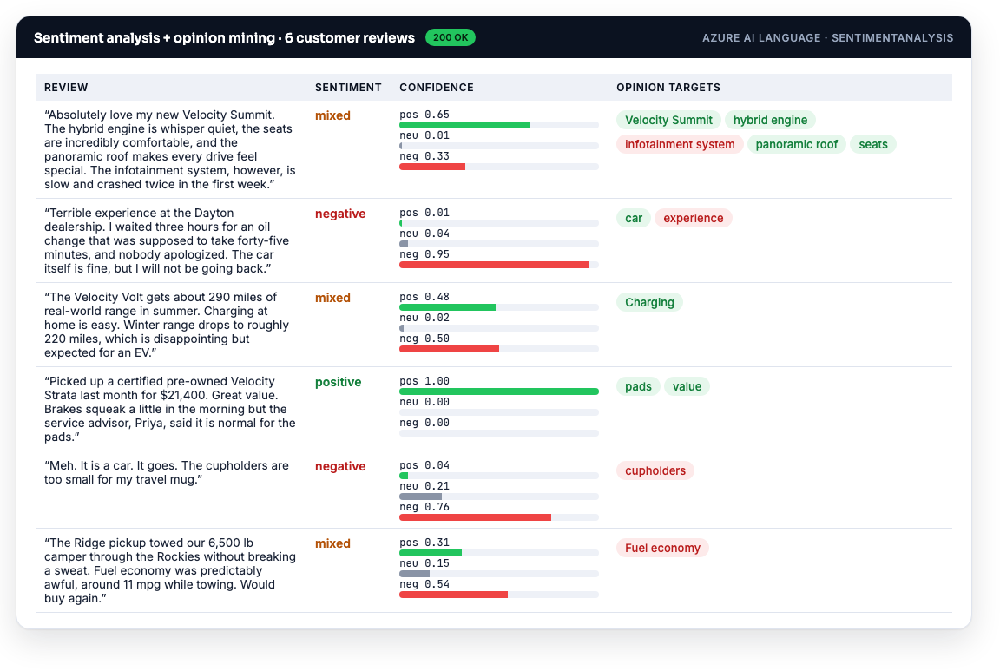
Look at review 1: mixed, because the engine is praised and the infotainment system is not. Opinion mining attaches the sentiment to each target, which is what a product team actually needs.
Key phrases and entities. Change
"kind"toKeyPhraseExtractionand thenEntityRecognition(no parameters needed). Key phrases give you the talking points; entities give you typed things: Organization, Product, Location, DateTime, Quantity, Person.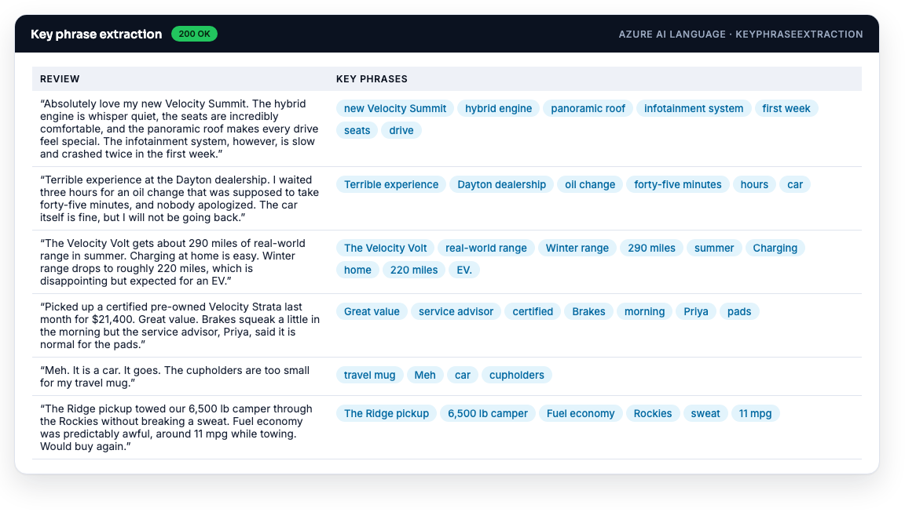
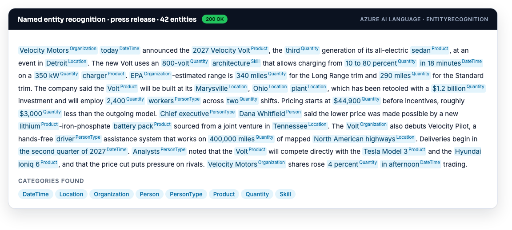
PII detection. Kind
PiiEntityRecognition. The service returns every personal identifier it found and a redacted copy of the text, ready to store. This is the privacy-and-security principle as an API call.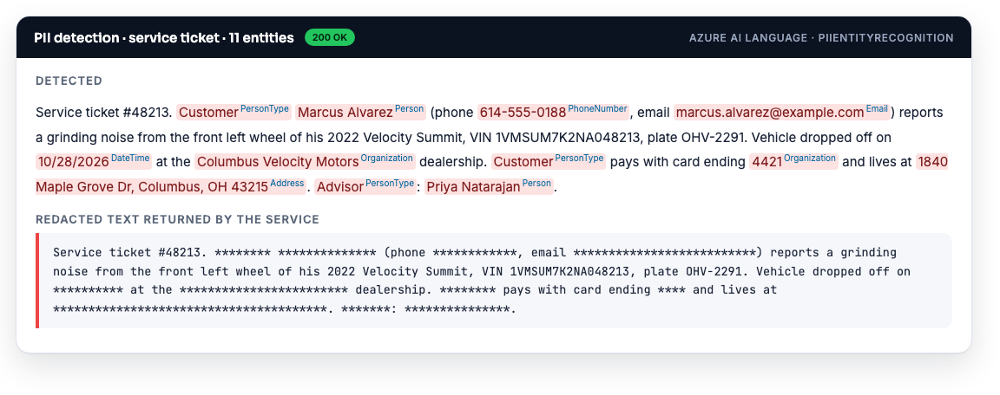
Language detection (kind
LanguageDetection, nolanguagefield in the documents) on reviews from Germany, Spain, Japan, France and the US: every one detected at confidence 1.00. Route each to the right market team, or translate first.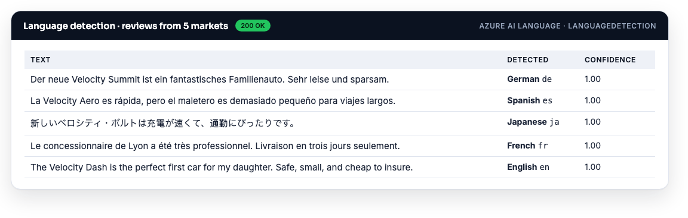
Summarization is asynchronous: you POST a job to
$ENDPOINT/language/analyze-text/jobs?api-version=2024-11-01with tasksExtractiveSummarizationandAbstractiveSummarization, then GET theoperation-locationURL untilstatusissucceeded. On the Volt press release, extractive picked three real sentences; abstractive wrote a new two-sentence summary.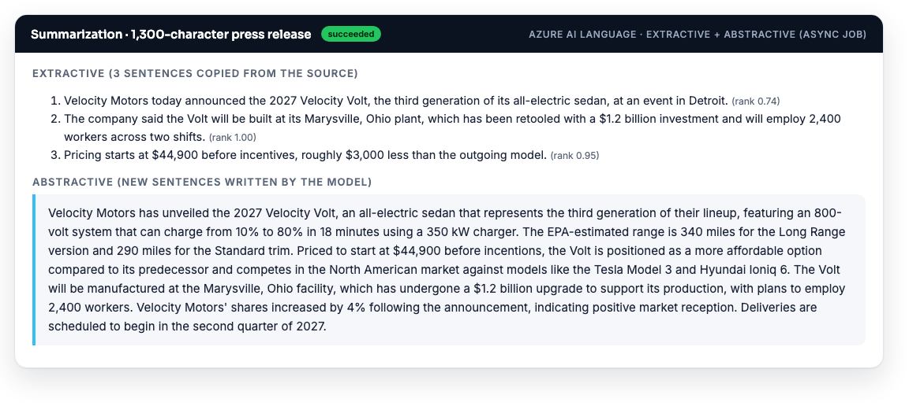
Translator is a separate host with the same key; add your region header. One call, six languages:
curl -s -X POST "https://api.cognitive.microsofttranslator.com/translate?api-version=3.0&from=en&to=de&to=ja&to=es&to=fr&to=hi&to=zh-Hans" \ -H "Ocp-Apim-Subscription-Key: $KEY" -H "Ocp-Apim-Subscription-Region: $LOC" -H "Content-Type: application/json" \ -d '[{"text":"Welcome to Velocity Motors. The 2027 Velocity Volt charges from 10 to 80 percent in 18 minutes."}]' | jq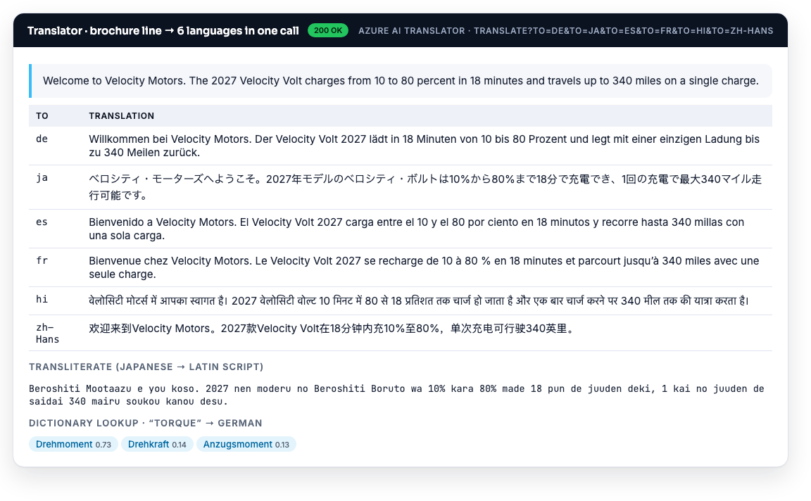
The lightweight app
text_analysis.py does the same work with the azure-ai-textanalytics SDK: one client, five method calls.
curl -sO https://varoonsahgal.github.io/az901/pit-crew/text_analysis.py && python text_analysis.py"""Lap 4 · Text analysis with Azure AI Language (a Foundry Tool).
Run: python text_analysis.py
Needs: pip install azure-ai-textanalytics
Env: FOUNDRY_ENDPOINT (https://<resource>.cognitiveservices.azure.com) AI_KEY
"""
import os
from azure.core.credentials import AzureKeyCredential
from azure.ai.textanalytics import TextAnalyticsClient
client = TextAnalyticsClient(endpoint=os.environ["FOUNDRY_ENDPOINT"], credential=AzureKeyCredential(os.environ["AI_KEY"]))
reviews = [
"Absolutely love my new Velocity Summit. The hybrid engine is whisper quiet, but the infotainment system crashed twice in the first week.",
"Terrible experience at the Dayton dealership. I waited three hours for an oil change. Nobody apologized.",
"Picked up a certified pre-owned Velocity Strata for $21,400 last month. Great value. Priya, the service advisor, was fantastic.",
]
print("── Language detection ──")
for d in client.detect_language(reviews):
print(f" {d.primary_language.name} ({d.primary_language.confidence_score:.2f})")
print("\n── Sentiment + opinion mining ──")
for r in client.analyze_sentiment(reviews, show_opinion_mining=True):
s = r.confidence_scores
print(f" {r.sentiment:9s} pos={s.positive:.2f} neu={s.neutral:.2f} neg={s.negative:.2f}")
for sent in r.sentences:
for op in sent.mined_opinions:
print(f" ↳ target '{op.target.text}' is {op.target.sentiment}: " + ", ".join(a.text for a in op.assessments))
print("\n── Key phrases ──")
for r in client.extract_key_phrases(reviews):
print(" " + " · ".join(r.key_phrases))
print("\n── Entities ──")
for r in client.recognize_entities(reviews):
print(" " + ", ".join(f"{e.text} [{e.category}]" for e in r.entities))
print("\n── PII (what we must redact before storing) ──")
ticket = ["Customer Marcus Alvarez (614-555-0188, marcus.alvarez@example.com) reports a grinding noise. VIN 1VMSUM7K2NA048213. Card ending 4421."]
for r in client.recognize_pii_entities(ticket):
print(" found:", ", ".join(f"{e.text} [{e.category}]" for e in r.entities))
print(" redacted:", r.redacted_text)── Language detection ──
English (1.00)
English (1.00)
English (1.00)
── Sentiment + opinion mining ──
mixed pos=0.50 neu=0.01 neg=0.49
↳ target 'Velocity Summit' is positive: love
↳ target 'hybrid engine' is positive: quiet
↳ target 'infotainment system' is negative: crashed
negative pos=0.02 neu=0.11 neg=0.87
↳ target 'experience' is negative: Terrible
positive pos=1.00 neu=0.00 neg=0.00
↳ target 'value' is positive: Great
↳ target 'Priya' is positive: fantastic
── Key phrases ──
new Velocity Summit · hybrid engine · infotainment system · first week
Terrible experience · Dayton dealership · oil change · Nobody
owned Velocity Strata · Great value · service advisor · Priya
── Entities ──
Velocity Summit [Skill], hybrid engine [Product], first [Quantity], week [DateTime]
Dayton [Organization], dealership [Location], three hours [DateTime], oil [Product]
Velocity Strata [Product], $21,400 [Quantity], last month [DateTime], Priya [Person], service advisor [PersonType]
── PII (what we must redact before storing) ──
found: Customer [PersonType], Marcus Alvarez [Person], (614-555-0188 [PhoneNumber], marcus.alvarez@example.com [Email]
redacted: ******** ************** *************, **************************) reports a grinding noise. VIN 1VMSUM7K2NA048213. Card ending 4421.Notice "Velocity Summit [Skill]" and "Dayton [Organization]": entity categories are guesses with confidence, and a made-up car brand confuses them. Real deployments add a custom entity model or a short allow-list.
Part 3 · Make the car talk · Azure Speech
Text-to-speech with SSML. Write the SSML to a file and POST it to the regional TTS endpoint. The header
X-Microsoft-OutputFormatchooses the audio format.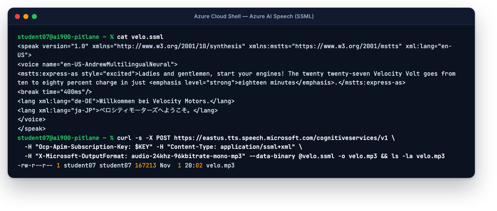
Listen to the two voices we made. The first is the plain welcome message; the second uses an express-as style, emphasis, a break and two lang tags in one utterance.
List the voices available to you (1,000+ across 150+ locales) with
curl -s https://$LOC.tts.speech.microsoft.com/cognitiveservices/voices/list -H "Ocp-Apim-Subscription-Key: $KEY" | jq '.[] | select(.Locale=="en-US") | .ShortName' | head.Speech-to-text. Send a WAV to the regional STT endpoint. We sent the welcome message back in:
curl -s "https://$LOC.stt.speech.microsoft.com/speech/recognition/conversation/cognitiveservices/v1?language=en-US&format=detailed" \ -H "Ocp-Apim-Subscription-Key: $KEY" -H "Content-Type: audio/wav; codecs=audio/pcm; samplerate=16000" --data-binary @velo-ava.wav | jq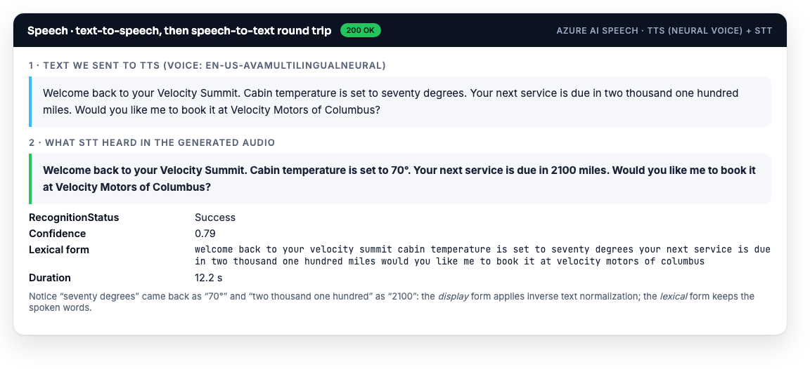
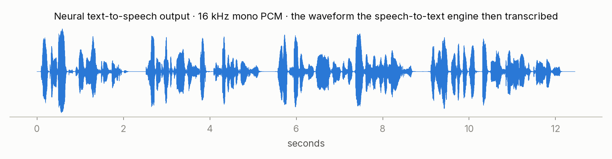
What the recognizer received: 16 kHz mono PCM, about ten seconds. "Seventy degrees" came back as "70°" and "two thousand one hundred" as "2100": the display text applies inverse text normalization; the lexical field keeps the spoken words. Both are in the detailed response.
The pipeline app.
speech_pipeline.pyrecognises a question from a WAV file with the Speech SDK, asks gpt-4.1-mini, and speaks the answer into another WAV. File in, file out, so it runs in Cloud Shell without a microphone.curl -sO https://varoonsahgal.github.io/az901/pit-crew/speech_pipeline.py curl -sO https://varoonsahgal.github.io/az901/downloads/question.wav # "Hey Velo, my brake warning light just came on…" python speech_pipeline.py question.wav answer.wav"""Lap 4 · Speech in → model → speech out, with Azure Speech (a Foundry Tool). Run: python speech_pipeline.py question.wav answer.wav Needs: pip install azure-cognitiveservices-speech openai azure-identity azure-ai-projects Env: AI_KEY SPEECH_REGION (e.g. eastus2) PROJECT_ENDPOINT CHAT_MODEL Works in Cloud Shell because it reads and writes .wav files instead of using a microphone. """ import os, sys import azure.cognitiveservices.speech as speechsdk from azure.identity import DefaultAzureCredential from azure.ai.projects import AIProjectClient in_wav, out_wav = (sys.argv + ["question.wav", "answer.wav"])[1:3] speech = speechsdk.SpeechConfig(subscription=os.environ["AI_KEY"], region=os.environ["SPEECH_REGION"]) # 1) Speech recognition (speech-to-text) rec = speechsdk.SpeechRecognizer(speech_config=speech, audio_config=speechsdk.audio.AudioConfig(filename=in_wav)) heard = rec.recognize_once() print(f"heard : {heard.text!r} ({heard.reason.name})") # 2) Ask the model project = AIProjectClient(endpoint=os.environ["PROJECT_ENDPOINT"], credential=DefaultAzureCredential()) r = project.get_openai_client().chat.completions.create(model=os.environ.get("CHAT_MODEL", "gpt-4-1-mini"), max_tokens=120, messages=[ {"role": "system", "content": "You are Velo, the in-car assistant for Velocity Motors. Safety first. Reply in under 40 spoken-friendly words."}, {"role": "user", "content": heard.text}]) answer = r.choices[0].message.content print(f"answer : {answer}") # 3) Speech synthesis (text-to-speech) with a neural voice speech.speech_synthesis_voice_name = "en-US-AvaMultilingualNeural" synth = speechsdk.SpeechSynthesizer(speech_config=speech, audio_config=speechsdk.audio.AudioOutputConfig(filename=out_wav)) result = synth.speak_text_async(answer).get() print(f"spoken : {out_wav} ({len(result.audio_data)//1024} KB, {result.reason.name})")heard : 'Hey Velo, my break warning light just came on while I was driving.' (RecognizedSpeech) answer : Please safely pull over and stop your car. Check your brake fluid level and ensure the parking brake is fully released. If the light stays on, do not drive—contact roadside assistance immediately. Safety first! spoken : answer.wav (435 KB, SynthesizingAudioCompleted)The recognizer heard "break warning light". Homophones are the classic speech failure; the model still answered correctly because context carried it. For a car product you would add a custom speech model trained on automotive vocabulary.
Voice mode on your agent (portal). Open
velo-warranty-expertfrom Lap 3 in the agent playground. In the left pane, under the model list, enable Voice mode. If the Configuration pane does not open, select the cog icon above the chat; under Voice mode preview the speech input and output settings and pick a voice. Close it and Save. In the Chat pane select Start session, allow the microphone, wait for Listening…, and ask "Does the battery warranty transfer to a second owner?" Watch Processing… then Speaking…; the cc button shows the text; X ends the session and shows the transcript. Call agent shows the client code, which streams audio both ways. This is Voice Live: Azure Speech wired into an agent with no audio code of yours.
Part 4 · One model that listens and speaks · gpt-audio-mini
Deploy the audio model. It is Global Standard only, and capacity 1 (1K tokens per minute) is enough for one person: audio costs about 10 tokens per second in and out.
az cognitiveservices account deployment create --name $NAME --resource-group $RG \ --deployment-name gpt-audio-mini --model-name gpt-audio-mini --model-version 2025-10-06 --model-format OpenAI \ --sku-name GlobalStandard --sku-capacity 1 -o tableSend the same spoken question straight to it and get spoken audio plus a transcript back:
curl -sO https://varoonsahgal.github.io/az901/pit-crew/talk_to_velo.py python talk_to_velo.py question.wav reply.wav"""Lap 4 · Respond to a SPOKEN prompt with a multimodal audio model (gpt-audio-mini). One model hears the question and speaks the answer — no separate speech-to-text step. Run: python talk_to_velo.py question.wav reply.wav Needs: pip install openai Env: AOAI_ENDPOINT (https://<resource>.openai.azure.com) AI_KEY AUDIO_MODEL (default gpt-audio-mini) """ import os, sys, base64 from openai import AzureOpenAI in_wav, out_wav = (sys.argv + ["question.wav", "reply.wav"])[1:3] client = AzureOpenAI(azure_endpoint=os.environ["AOAI_ENDPOINT"], api_key=os.environ["AI_KEY"], api_version="2025-01-01-preview") r = client.chat.completions.create( model=os.environ.get("AUDIO_MODEL", "gpt-audio-mini"), modalities=["text", "audio"], audio={"voice": "alloy", "format": "wav"}, messages=[ {"role": "system", "content": "You are Velo, the in-car assistant for Velocity Motors. Safety first, then one or two short steps. Under 50 words."}, {"role": "user", "content": [{"type": "input_audio", "input_audio": {"data": base64.b64encode(open(in_wav, "rb").read()).decode(), "format": "wav"}}]}]) msg = r.choices[0].message open(out_wav, "wb").write(base64.b64decode(msg.audio.data)) print("Velo said:", msg.audio.transcript) print(f"saved {out_wav} · tokens: {r.usage.prompt_tokens_details.audio_tokens} audio in, {r.usage.completion_tokens_details.audio_tokens} audio out")Velo said: Safety first: Pull over safely and contact roadside assistance or your dealership immediately. Then have the brakes inspected before continuing your drive. saved reply.wav · tokens: 81 audio in, 199 audio out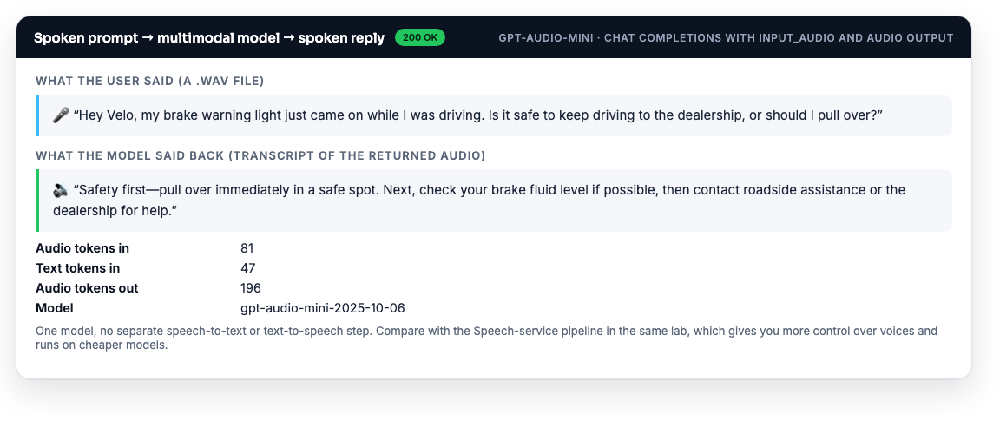
Compare the two answers you now have for the same question (
answer.wavfrom the pipeline,reply.wavfrom the audio model). One call instead of three; the model heard "brake" correctly from context; but you chose neither the voice nor the recogniser, and the deployment is costlier per minute of speech. That trade-off is the exam question.
You ran at least sentiment, key phrases, entities and PII through Azure AI Language; produced an MP3 with SSML and transcribed a WAV; ran speech_pipeline.py and talk_to_velo.py and have two answer files; and your agent spoke to you in Voice mode.
Troubleshooting
Translator returns 401 while Language works
Translator's global host needs the extra header Ocp-Apim-Subscription-Region: eastus2 so it knows which resource the key belongs to.
STT returns "InitialSilenceTimeout" or an empty DisplayText
The WAV must be 16-bit PCM, 16 kHz, mono. Generate it with the TTS format riff-16khz-16bit-mono-pcm or convert with ffmpeg: ffmpeg -i in.m4a -ar 16000 -ac 1 out.wav.
speech_pipeline.py: "ImportError: libssl" or the Speech SDK will not load
In Cloud Shell run pip install --upgrade azure-cognitiveservices-speech; on some Linux images you also need sudo apt-get install -y libssl-dev libasound2. The REST calls in Part 3 need nothing.
gpt-audio-mini: "DeploymentNotFound" or 429
Check the deployment name is exactly gpt-audio-mini and that AOAI_ENDPOINT points at your own resource. A 429 at capacity 1 means you spoke for a long time; wait a minute or raise capacity to 2.
Voice mode will not start a session
The browser needs microphone permission and HTTPS (the portal is). Try a different browser; make sure the agent has a saved model and that your role on the resource includes Azure AI User.
Quick quiz
You want a list of the main topics customers mention. Which technique?
Key phrase extraction. Entities give typed things; sentiment gives polarity; summarization gives prose.
A review says the engine is great but the screen crashes. What does sentiment analysis return, and what tells you which part was bad?
Document sentiment mixed; opinion mining attaches positive to "engine" and negative to "infotainment system".
Which summary type can contain sentences that are not in the original?
Abstractive. Extractive only selects existing sentences.
Which SSML element switches the voice's language mid-sentence?
<lang xml:lang="de-DE"> (with a multilingual voice). <voice> changes the voice; <mstts:express-as> the style; <break> adds a pause.
A product must answer spoken questions with the least custom code. Pipeline or multimodal audio model?
Multimodal audio model (or Voice mode on an agent): one call in, audio out. Choose the pipeline when you need a specific brand voice, custom vocabulary, or cheaper text models.
Which service feature returns a redacted copy of a ticket?
Azure AI Language PII detection (PiiEntityRecognition), via redactedText.
Pit wall debrief · what you learned
- Azure AI Language: language detection, sentiment with opinion mining, key phrases, entities, PII with redaction, extractive and abstractive summarization; Translator for languages.
- Azure Speech: recognition (display vs lexical text, confidence) and synthesis (neural voices, SSML), both as REST calls or through the Speech SDK; Voice mode puts them inside an agent.
- Two architectures for a talking assistant: STT → model → TTS, or one multimodal audio model such as gpt-audio-mini.
- Three lightweight apps:
text_analysis.py,speech_pipeline.py,talk_to_velo.py.
Next: Velo gets eyes. Lap 5 · Eyes on the track →